Lemuria
A floral identity with
room for the unexpected.
ProjectBrand identity for a floral business I co-founded.
Logo system · Cards & care tags · Stickers · Ribbons
Visual languageExpressive botanical imagery, an elegant serif wordmark, and a consistent signature across print and flowers.


One signature.
Different personalities.
The business cards pair the same white wordmark with changing floral imagery. Blue orchids, dusky petals, sculptural blooms, and warm orange flowers give each card its own atmosphere while keeping the brand immediately recognizable.

Selected original business-card artwork, 2023. Shown as flat designs.
A mark with
a botanical character.
The identity pairs a fine-line floral emblem with a distinctive serif wordmark. The horizontal signature and stacked compositions give the same brand a presence on compact labels, portrait cards, and long ribbons.
Original logo and card designs. Production annotations have been cropped out; the artwork and typography are preserved.
Made to fold.
Designed to stay.
A slim, punched card folds around the bouquet, bringing together the brand signature, care notes, and social channels. Black and white stickers extend the same identity across the packaging.
Original card and sticker artwork. The card is shown unfolded, with its punched holes and central fold.
The identity,
in a continuous line.
A repeated logo turns the ribbon into a continuous brand signature. Positive and reversed treatments keep the design usable against both light and dark materials.
Flowers, with
their own character.
From soft rose bouquets to sculptural orchids and flowers for a garden gathering, each arrangement has its own palette and character. The Lemuria signature connects them through ribbons, packaging, and photography.
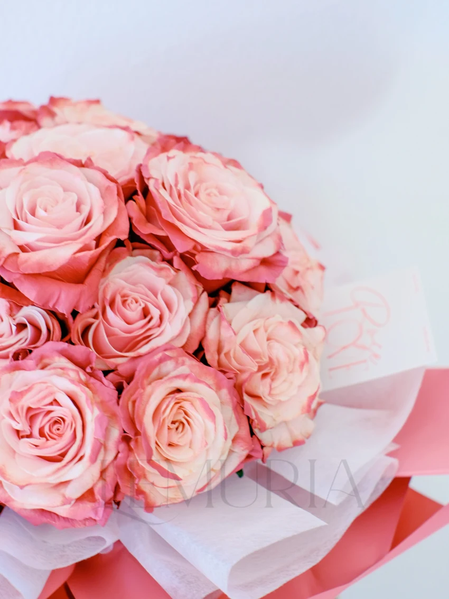
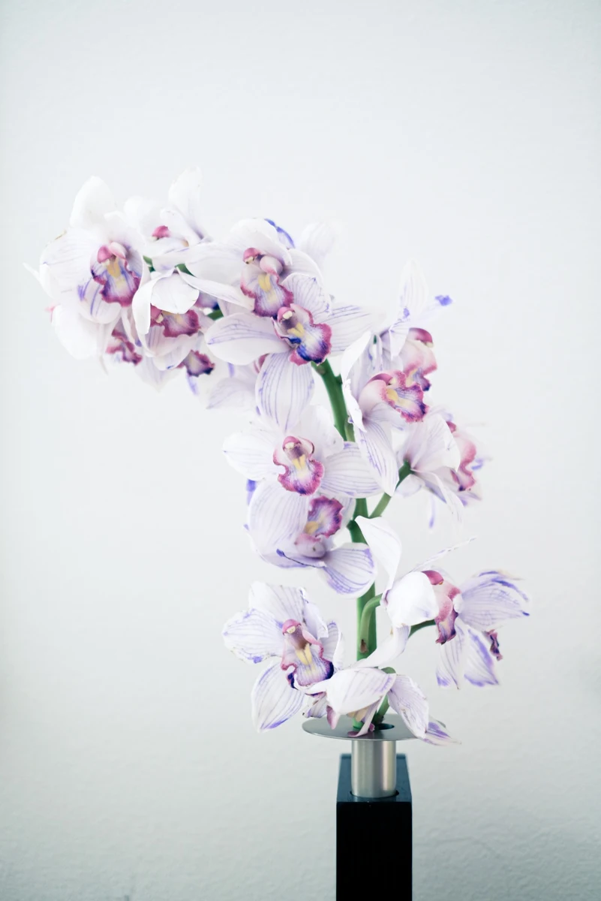
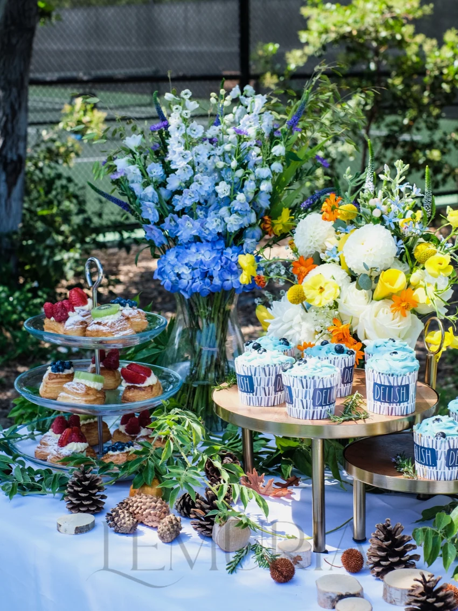
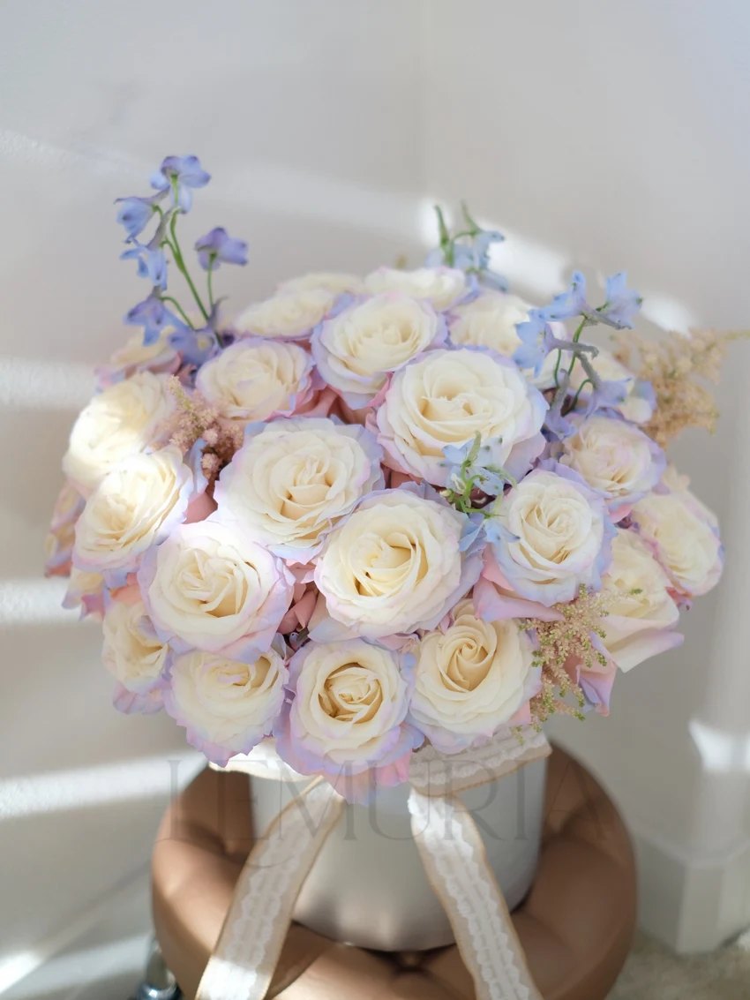
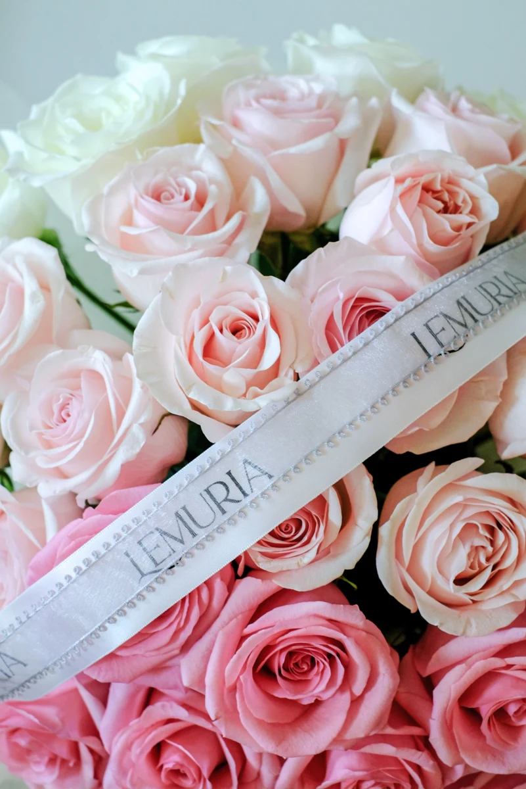
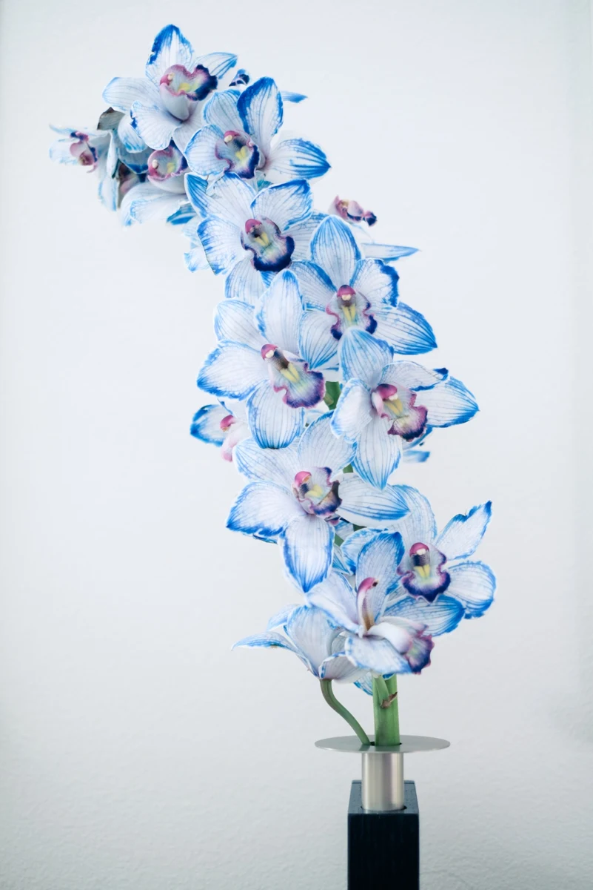
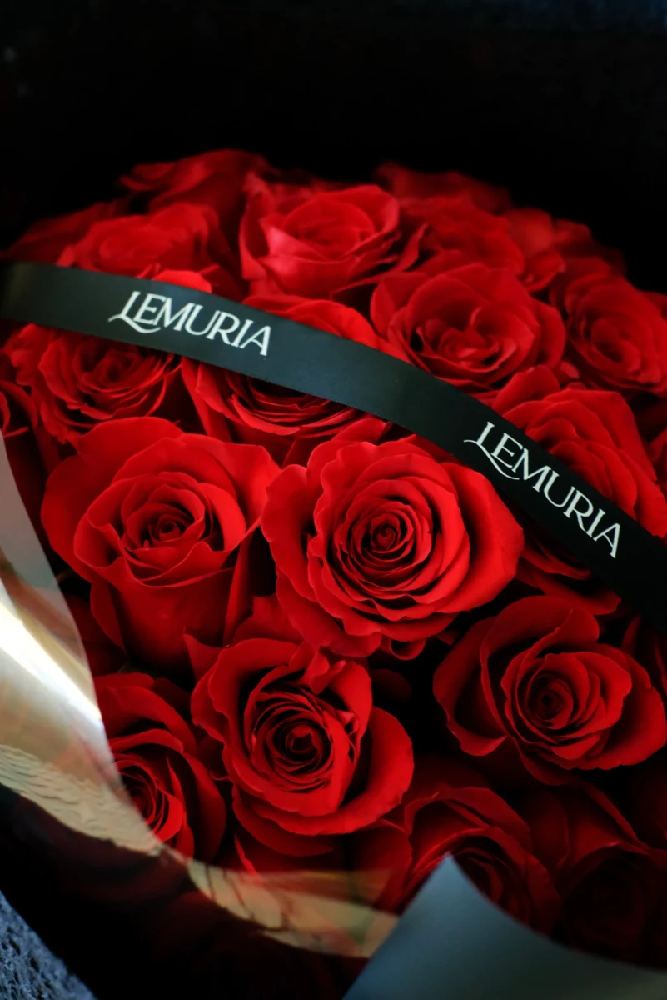
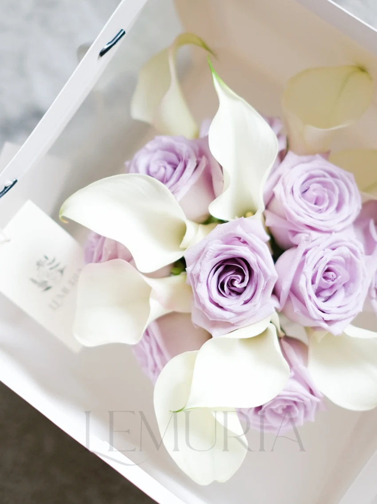
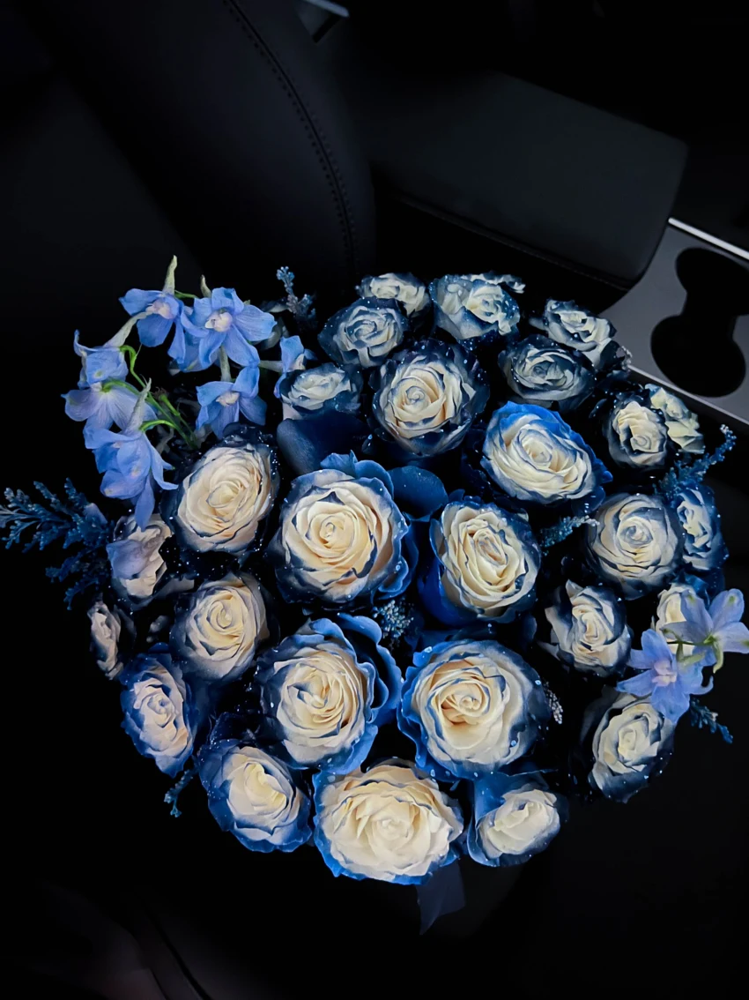
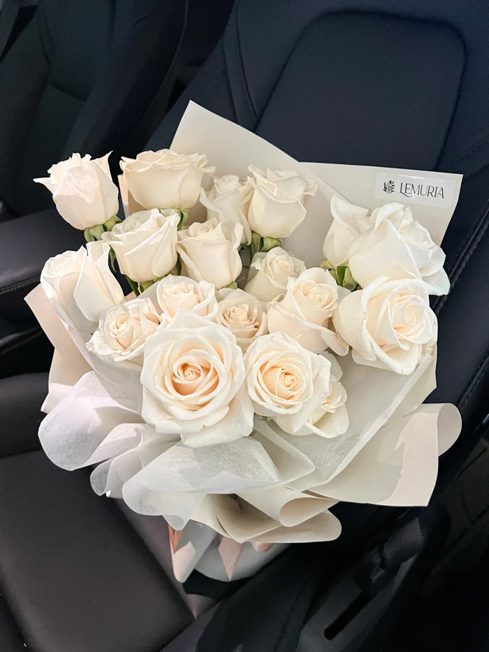
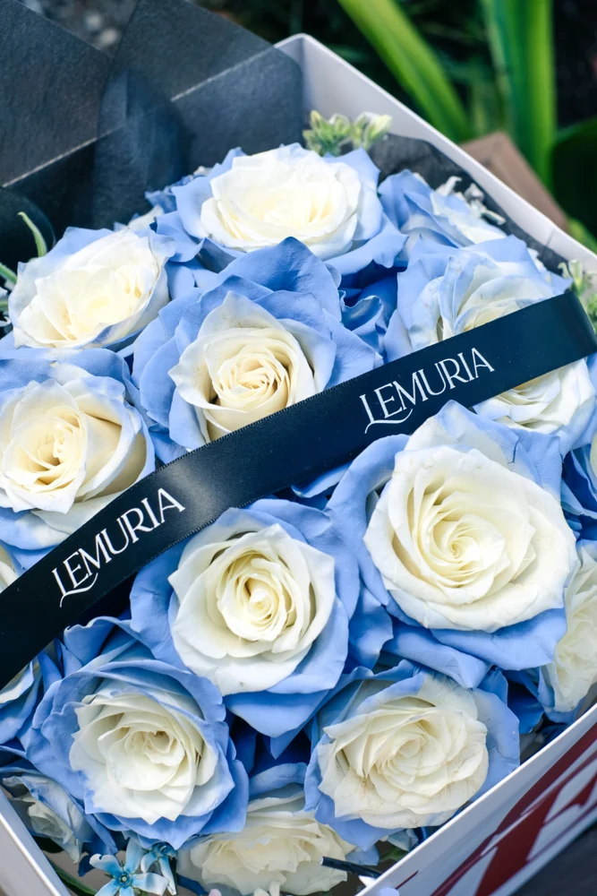
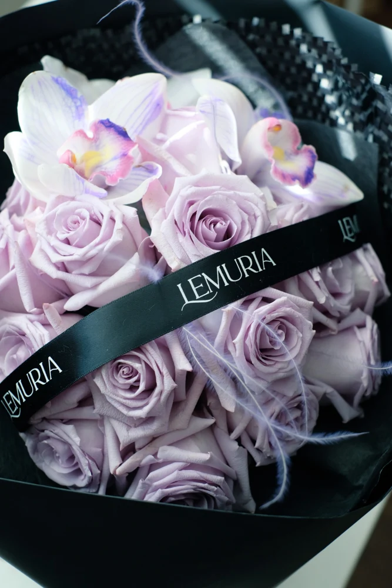
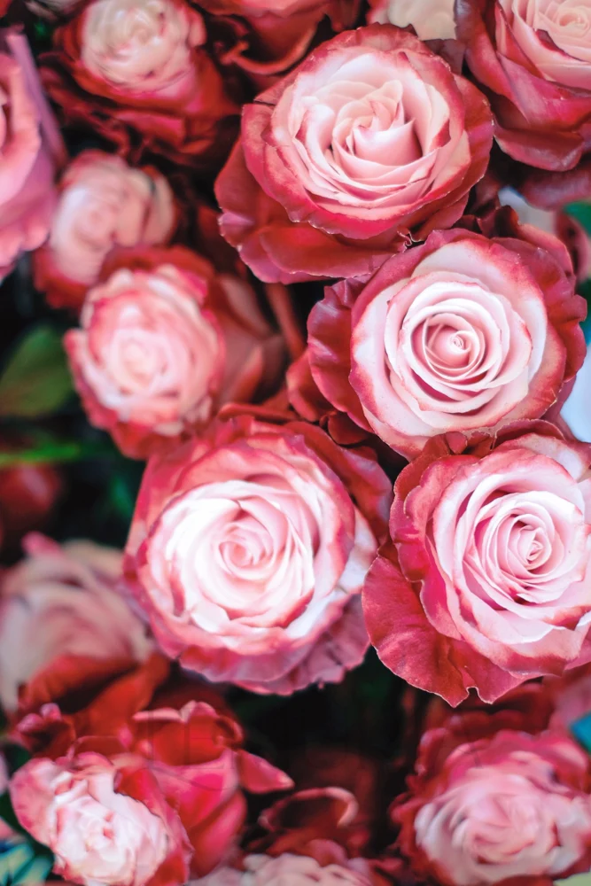
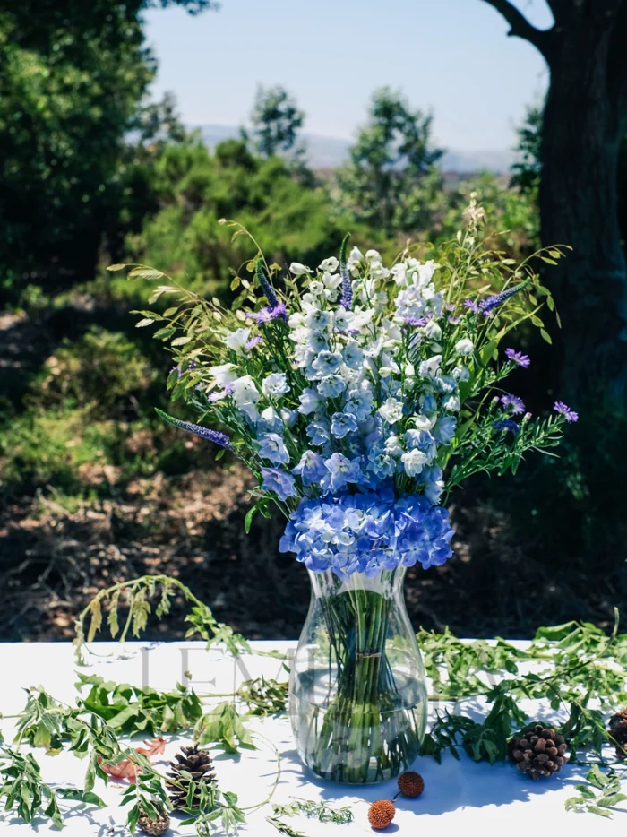
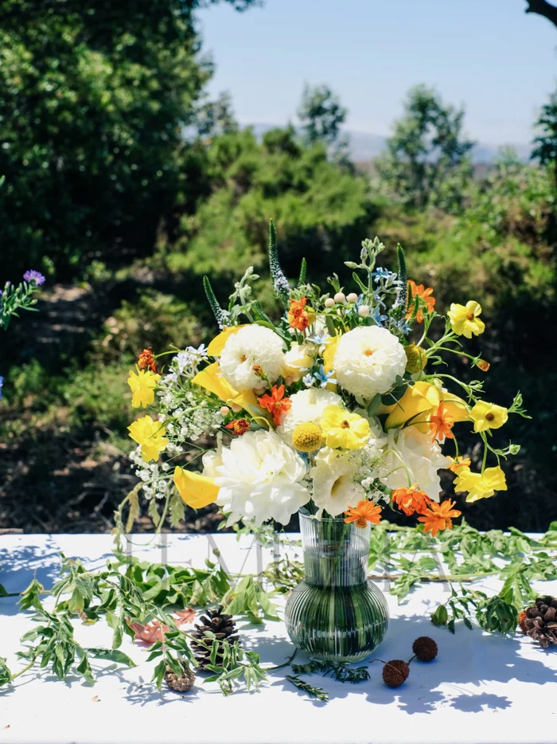
Bouquets, sculptural stems, and flowers for a gathering · Lemuria Florals, 2023–2024.
Lemuria brought visual design into the everyday details of a small business: the first impression of a card, the consistency of a name, and the finishing touch on a bouquet.